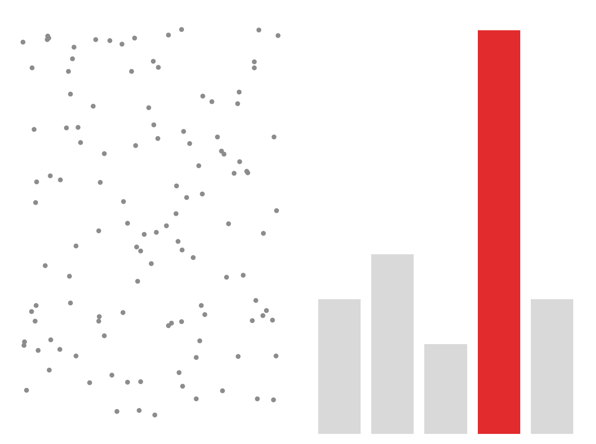
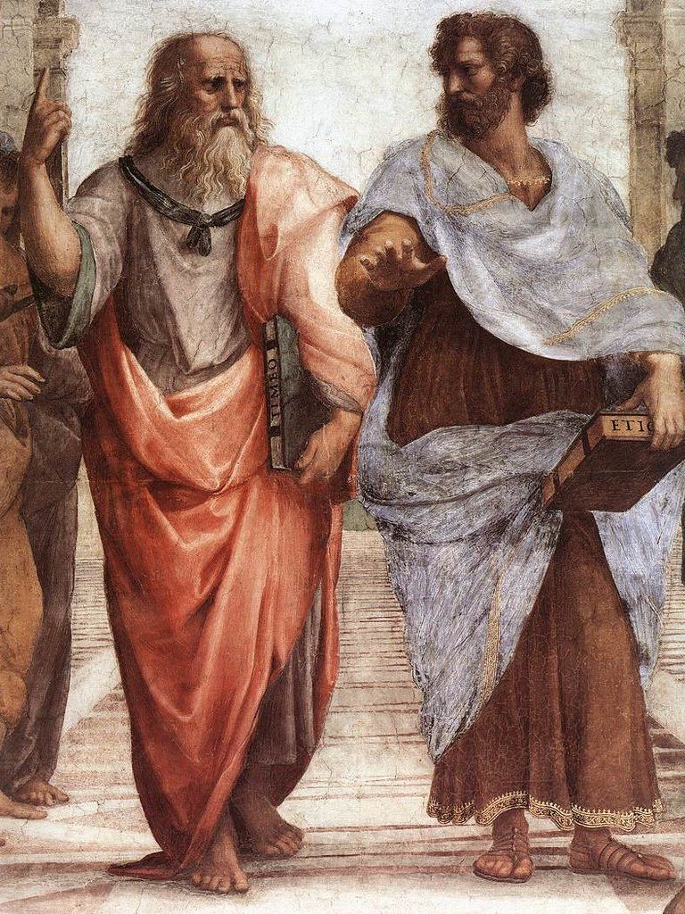
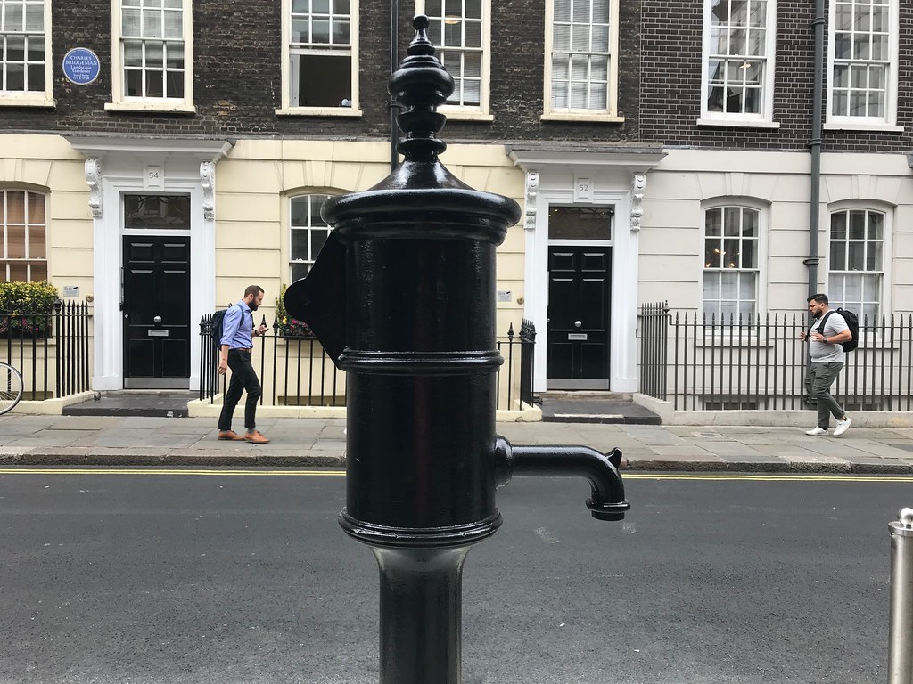

07
데이톨로지 — 데이터로 읽는 인간과 사회
데이터의
미학
스토리텔링에서 데이터텔링으로 · 강사 : ○○○

CONTENTS
데이터의
미학

학습 목표
목표 1
역사적 인포그래픽의 설계 원리 분석
목표 2
'데이터 텔러'의 역할 이해와 한 컷 인포그래픽 기획
오늘의 질문
그림 한 장이
정책을 바꾼 적이 있을까?
한 컷의 힘, 인포그래픽
[비유] 라파엘로 「아테네 학당」

사진: Image Editor / CC BY 2.0
아테네 학당 = 개념 인포그래픽
- 하늘을 가리키는 플라톤 = 관념론
- 손바닥을 땅으로 향한 아리스토텔레스 = 현실 중시
- 철학 논쟁 전체를 손짓 두 개로 압축
- 긴 설명 없이 한눈에 전달되는 한 컷
한 컷의 힘, 인포그래픽
인포그래픽 = Information + Graphics
한 컷의 힘, 인포그래픽
시각적 정보 사회
텍스트 → 이미지·영상
- 정보 소비의 중심 이동
- 복잡한 분석 결과를 한 장으로 축약
- 저자: 우뇌 기능 활성화와 연결
말로 그린 인포그래픽
- 다이아몬드 『총, 균, 쇠』
- 문명 진보의 세 동력 = 전쟁·유행병·과학기술
- 세 단어로 압축한 개념도
존 스노우의 콜레라 지도
[비유] 브로드가(現 브로드윅가) 펌프

사진: Matt From London / CC BY 2.0
펌프 = 지도가 가리킨 원인
- 1854년 런던 소호, 콜레라 대유행
- 사망자 집 위치를 지도에 점으로 표시
- 점이 몰린 한가운데 = 브로드가 펌프
- 원인 = 공기가 아니라 오염된 식수
존 스노우의 콜레라 지도
점을 찍자 보인 원인
나이팅게일의 로즈 다이어그램
[비유] 장미 꽃잎
사진: rvsarathi / CC BY 2.0
꽃잎 = 한 달의 사망
- 크림전쟁 시기 월별 사망 원인
- 꽃잎 크기 = 사망자 수
- 가장 큰 꽃잎 = 전투가 아닌 감염·질병
- 숫자 표보다 강한 설득력
나이팅게일의 로즈 다이어그램
무엇이 병사를 죽였나
나이팅게일의 로즈 다이어그램
정직한 그래프였나?
면적 왜곡 논쟁
- 꽃잎 반지름 2배 → 면적 4배
- 반지름과 면적 중 무엇이 값인가
- 설계 선택이 인상을 바꿈
아름다움의 함정
- 아름다운 그림 = 비판적 사고 마비?
- 출처·표본·척도 확인
- 설득과 왜곡 사이
미나르와 데이터 텔러
[비유] 강줄기
사진: MPLSArchives / CC BY 2.0
강폭 = 병력의 크기
- 넓던 강이 점점 가늘어지는 모습
- 미나르: 병사 수를 띠의 폭으로 표현
- 지도 위 경로 + 시간 + 기온까지 한 장
- 숫자를 몰라도 느껴지는 비극
미나르와 데이터 텔러
42만 명 출발, 1만 명 생환
미나르와 데이터 텔러
데이터 텔러(Data-Teller)
데이터 분석 → 이미지 → 스토리저자가 말하는 '데이터 텔러'의 역할 (연재 ⑥)
- 2013 뉴욕타임스 방언 지도 = 온라인 최다 조회
- AI 이미지 검색 시대: 좋은 한 장 = 비즈니스 성패
- 스토리텔링 → 데이터텔링
명작 인포그래픽 한눈에
무엇을 한 컷에 담았나
| 작품 | 연도 | 한 컷에 담은 것 | 결과 |
|---|---|---|---|
| 스노우 콜레라 지도 | 1854 | 펌프 주변 사망자 분포 | 식수 오염 입증 |
| 나이팅게일 로즈 다이어그램 | 1858 | 월별 사망 원인 | 병원 위생 개혁 |
| 미나르 원정도 | 1869 | 병력·경로·기온·시간 | 전쟁의 비극 전달 |
| 뉴욕타임스 방언 지도 | 2013 | 지역별 방언 분포 | 온라인 최다 조회 |
활동
활동 (30분): 명작 인포그래픽 해부
질문 1
변수
- 변수는 몇 개?
- 위치·크기·색·선 중 무엇으로?
질문 2
메시지
- 설득하려는 단 하나의 메시지
- 한 문장으로 쓰기
질문 3
잃은 것
- 표로 보여 줬다면?
- 이 그림이 숨기는 것은?
중간 과제 안내
한 컷 인포그래픽 (8주 제출, 20%)
제출물
- 공공데이터(KOSIS, 공공데이터포털, 서울 열린데이터광장 등)로 인포그래픽 1장
- 해설 1쪽: ① 메시지 한 문장 ② 데이터 출처·표본 ③ 시각 설계 이유 ④ 이 그림이 숨기는 것
평가 기준
- 메시지 명확성 30
- 데이터 정확성 30
- 시각 설계 25
- 한계 성찰 15
정리 및 확인 문제
오늘의 핵심 4줄
인포그래픽 = 복잡한 데이터를 한 컷으로, 메시지 한 문장
스노우 = 점 지도로 오염된 식수 원인 입증 (1854)
나이팅게일·미나르 = 꽃잎과 띠로 사망·비극 전달
데이터 텔러 = 분석 → 이미지 → 스토리
정리 및 확인 문제
확인 문제
문제 1
존 스노우의 1854년 지도가 밝혀낸 콜레라의 원인
문제 2
미나르의 원정도에서 '띠의 폭'이 나타내는 것
문제 3
로즈 다이어그램에서 꽃잎 반지름을 2배로 늘리면 면적은 몇 배?
문제 2: 병력(병사 수) — 42만 명 출발, 1만 명 생환
문제 3: 4배 → 반지름으로 값을 그리면 큰 값이 과장되어 보임
정리 및 확인 문제
마무리
이미지 출처
사진 (Openverse 검색, CC 라이선스)
- Plato and Aristotle — Image Editor, CC BY 2.0, flickr
- John Snow's pump restored — Matt From London, CC BY 2.0, flickr
- Red Rose Flower — rvsarathi, CC BY 2.0, flickr
- Mississippi River Aerial Photo — MPLSArchives, CC BY 2.0, flickr
- 애니메이션·그림 — manim, matplotlib으로 직접 제작 (스노우·나이팅게일·미나르 도표는 단순화한 재현)
- 인용 — 김성태, 연재 ⑥ 「위대한 한 컷… '스토리 텔링'에서 '데이터 텔링'시대로」(지디넷코리아, 2021.06.14)